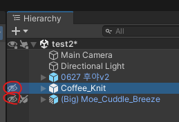

#Unity.3D / 3편. 실제 작업 들어가기
0. 오늘 할 것
드디어 교체 작업을 진행할 예정이다. 본래 2주는 일찍 끝났어야 할 간단한 작업이었는데, 필자 집안 사정이나 여타 예상치 못한 부분 때문에 많이 딜레이되어 이번 3편에서 두 의상 모두 붙여볼 것이다.


(두 번이나 자료로 등장했던 Before -> After 사진)
1. 의상 가져오기
저번 시간까지 진행을 완료한 프로젝트의 모습이다.
의상 두 개를 저번 시간에 했던 것처럼 하이어라키로 드래그해서 가져와 보자. 의상 색 바리에이션이 많던데 사용할 색으로 가져오면 될 것 같다. 필자는 일단 필자 취향대로 가도록 하겠다.
보통 하이어라키로 드래그해서 가져오게 되면 Position이 0, 0, 0 좌표로 설정되어 있을 것이다. 가장 상위 Parent를 선택하면 Position, Scale, Rotation 값을 볼 수 있다.
이제 다 불러왔으면 각 패키지 최상단 Parent를 오른쪽 클릭하고, Prefab -> Unpack Completely를 선택해서 아바타와 의상 두 개를 언팩해주자.

2. Coffee Knit 붙여보기
첫번째로 가장 파츠가 적은 Coffee Knit를 붙여보자. 패키지 이름은 02_Moe로 되어있지만 식별이 용이하도록 Coffe_Knit로 Refactor 해주도록 하겠다. 작업자의 식별이 용이하도록만 하면 되기 때문에, 어떤 이름이든 취향껏 해도 좋다.

보이기 / 숨기기 버튼으로 불러온 두 개의 의상 중 Coffee Knit를 제외한 나머지 한 개의 옷을 잠시 숨겨주고,
기존 '쉬프트' 의상은 동그라미 친 부분 체크를 풀어서 아예 비활성화하자.
위 과정이 문제없이 완료되면 이러한 모습일 것이다. 겉으로 보이기엔 제대로 의상이 입혀져 있는 것 같지만 사실은 아니다. 몸과 옷이 따로 놀고 있기 때문에, 몸을 움직이면 옷은 고정된 채로 공중부양하게 될 것이다.
따라서 우리는 옷을 몸에 종속시키는 작업을 통해 몸의 움직임을 옷이 따라가도록 해야만 한다.
Coffee Knit의 하위 요소를 보면 Armature가 존재하는데, 이걸 열어보면 최상위에 Hips가 자리하고 있을 것이다. 이걸 바로 아바타에 넣게 되면 식별하는 데에 어려움이 있기 때문에 넣기 전에 미리 이름을 수정해줄 예정이다.
Naming Convention(작명 규칙)은 기존에 붙어있던 의상과 동일하게 진행하겠다.
기존 의상의 작명 규칙은 [(의상명) + _ + (부위명)] 이었으니, 필자 또한 동일하게 진행하였다. 다만 의상 이름이 길어 KN으로 임의적으로 줄여 사용하였으니 양해 바란다.
이제 정말 시작할 것인데, 사실 이제 공장처럼 반복작업을 하면 된다. 일단 가장 먼저 의상의 Armature 안에 있던 Hips를 아바타의 Hips 하위로 드래그해서 옮긴다.
(옮기기 전)
(옮긴 후)
다음으로 Left Leg와 Right Leg를 아바타의 Left Leg, Right Leg 하위로 옮겨준다.
(옮기기 전)
(옮긴 후)
이로써 하의는 끝났고, 다음은 상의의 시작인 Spine이다. 똑같이 하위로 옮겨준다.
(옮기기 전)
(옮긴 후)
Chest도 옮겨주고...
(옮기기 전)
(옮긴 후)
Left, Right shoulder도 옮겨주고...
(옮기기 전)
(옮긴 후)
Neck도 옮겨주면 끝이다. 이로서 상의도 끝났고, Cofee Knit는 이제 다 붙었다고 보면 된다.

다 끝났으니 의상 본체를 아바타 패키지 내로 옮겨주자.